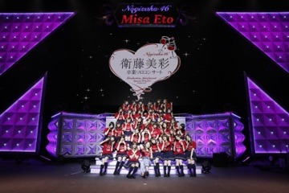

2019/0418Thuまいにち10000歩
こんにちは！
伊藤純奈です！
桜見に行った時の〜〜
高校の時のお友達と
行きました☺︎ほぼ週1ペースで
いつも会ってくれますありがとう☺︎☺︎☺︎
「今が思い出になるまで」
発売されました！
初回生産限定盤には
いろんな映像が収録されてるので
要ちぇっく！
去年の全国ツアーでやった
スイカの白米さまとか
わか、ちまとの低体温のキスとか
いくちゃんの水玉模様とか
見どころた〜〜っぷりなので
見たら感想おしえてね(*⁰▿⁰*)
選抜発表がありました！
今回もじゅんはアンダーです。
いつも期待してくれて、
今回は入れる！って言ってくれてる
みなさんには本当に申し訳ない
気持ちでいっぱいです。
自分なりに自分の場所をみつけて
はやくみなさんを笑顔にしたいので
待っていてください！！
いつもありがとうね〜〜ほんとに
心の支えだよ〜〜。
みりあ、おめでとう♡
そうそう、2期生会を
しました！
この会の前に伊織ちゃんが
我が家に遊びにきたの〜
安心するね〜しゅきよ〜
2期生はなんだかんだ安心
する雰囲気でいいねえ。
そんな感じで2期生を
BRODYで特集して
くださいました☺︎☺︎☺︎
4月23日発売です！
おたのしみに！
そうだ、この間4期生のみんなが
頑張ってるプリンシパルをれのと
観に行ってきました！☺︎
みんなキラキラしてたね〜
1幕と2幕の間楽屋でずーっと
みんながセリフ練習してるの
みて感動しました〜〜。
怪我だけはしないように
残りの公演もがんばって♡
すごい真ん中にはいっちゃって
ごめん（＾ω＾）(笑)
それでは！
あした更新する！
2019/0401Monお花見した〜いね
こんばんは！
伊藤純奈です！
新元号！令和！素敵！！
大阪全握ありがとう
ございました！
そしてみさ先輩が
乃木坂46として最後の日でした！
初期からずっと、先輩らしく
でも会うといつもおふざけして
仲良くしてくれてた先輩。
舞台「三人姉妹」で共演してからは
本当のおねえちゃんみたいに
頼らせてもらったし、色んなお話
したしご飯行ったりカラオケ行ったり
思い出たくさん！
これから会えなくなるわけじゃない
けどやっぱり寂しいなあって。
昔からライブのリハの時に純奈の
ダンスが好きって言ってくれるのが
めっちゃ嬉しかった〜〜！！！
約8年間、本当にお疲れ様でした！
そして握手のペアはかりんちゃん〜
ゆっちゃんとかりんちゃんは
ラスト全握！色んなお仕事が
いつ最後になるかわかんない
のがさみしいねえ。
かりんちゃんのファンの皆様、
じゅんと握手してくれてありがとう！
みんな寂しそうだったけど
かりんちゃんとおしゃべりして
ニコニコ笑顔に戻ってるのが
ほっこりした☺︎☺︎
乃木中の沖縄ロケ、
まだまだ続くので
毎週おたのしみに！
これだけ言わせて！
純奈はしゃぎすぎな！！！
それでは〜〜
2019/0321Thu春だねえ〜可愛いワンピースたくさん着たいねえ〜
こんばんは！
伊藤純奈です！
本日名古屋全握ありがとう
ございました！可愛いわが妹と
ペアでした〜たのしかったね〜
ザンビのオフショット
あげてなかったから、
ぱーっとあげるね☺︎☺︎☺︎
視力悪くていつものコンタクト
じゃないとみえないからギリギリ
まで眼鏡してたんだけど、カメラ
回し始めて眼鏡を外したんだけど
遠くの方からの監督さんの指示を
声はしっかり聞こえてたんだけど
みえてなくて全然違う方向みてめちゃ
大きい声で 返事してて( ◠‿◠ )
まあそんな事もあるよね( ◠‿◠ )
こんな感じ！
先日みさ先輩の
ソロコンサートがありました！
アンコールで少しだけ出演させて
いただきました〜！

やっぱりまだ実感がわかないなあ。
ほんとどこを切り取っても綺麗で
華やかなライブでした！歌声も
ずっと聞いていたいくらい心地よい！
すごいうっとり見ちゃった☺︎
残りほんとにほんとに少ない時間
だけど大切に大事に過ごしたい！！
それでは！
2019/0226Tueちょっぴり長いかも
こんばんは！
伊藤純奈です！
バースデーライブ4日間
無事終了致しました！
来てくださったみなさん
ありがとうございました☺︎
1日目は1期生のぐるかー
から始まってじゅん達2期生は
おいしゃんからの参加！その次に
3期生と続いて出てくる演出、
すごく好きだったなあ〜。
書きたいことがたくさん！
全部について書きたいくらいだけど
ピックアップして書くね！
まずは乃木團！新メンバーとして
しおりと参加させてもらいました〜。
スペシャルゲストで氣志團の
西園寺瞳さん、星グランマニエさんが
来てくださいました。本当に感激すぎます！！
かっこよくてかっこよくて.....。
ありがとうございました！！！！！
バンドで歌うのは初めてだったから
乃木坂人生の中で割とトップを争う
緊張度合いで、震えが止まらなかったの(笑)
あみちゃんのパートをやらせてもらったん
だけど、あみちゃんにも頑張って〜って
言ってもらえてたから頑張れた！
あとは飛鳥まあやかなちゃんしおりと
アイコンタクトとって歌うのが楽しくて、
この瞬間よ終わるな〜〜って思ってました(笑)
終わってからメンバーみんなが褒めてくれて
嬉しかった☺︎幸せ。
乃木團、またどこかでみんなと
お会いできますように！
あとは誰かは味方にわかの
ポジションで歌わせてもらいました〜。
わかのポジションなのも嬉しかったし
大好きなみさ先輩、玲香さんと
歌えたのも嬉しかったの！☺︎☺︎☺︎
そして、4日目は
西野七瀬ちゃんの卒業。
おめでとうございます！
スイカで仲良くなってから
一緒にご飯行って、お家で
ご飯作って食べて、旅行行って
って数えきれないくらい思い出が
たくさんあるなあ。
選抜とアンダーだったから仕事で
会う機会はみんなより少なかった
けど会ったらぴたーってくっ付いて
話してそれが楽しくて心地よかった！
今まで卒業してきた仲良しのメンバーも
そうだけど選抜とアンダーだったから
一緒にいる時間も少なかったのが今、
振り返ると寂しかったなあって。
自分の努力不足だねえ。
スイカからまた1人大切な仲間が
減っちゃった〜。楽屋がさらに
さみしくなるなあ。
あ、4日目にゆうりかりん純奈の
3人で影ナレしたんだけどななに
影ナレ3人だよーって言ったら
「ななは？ななもやりたい！」
って言ってたのが可愛かったね(*´ω`*)
改めて卒業おめでとう。
大好きだよ〜。次の旅行
どこの国行こっか？☺︎(笑)
新しく4期生も参加して、
2年前のライブを思い出した〜。
あの時も3期生が参加して
大切なメンバーが1人卒業して。
こうやって新しい乃木坂46が
出来ていく！1期生に
教えてもらった事、たくさん
4期生に伝えられるように頑張るね。
このライブに関わって下さった
みなさんに感謝です。ありがとう
ございました！！！
2019/0220Wedあったかいなあ。
こんばんは！
伊藤純奈です！
いよいよ明日から4日間
バースデーライブです☺︎
バースデーライブだからさ、
過去の曲をやるじゃない？
あっ懐かしいなあ〜って曲とか
たくさんあって初期の頃を
すごく思い出したのね。
ふと、今まで卒業したメンバーの
個人PVとかみんなと撮った写真
とかが見たくなってCDごそごそ
出してみたり、前使ってた携帯の
フォルダ見てみたり。
夜見てたんだけどなんかすごい
涙出てきて改めてみんなの事が
大好きだ〜〜ってなった☺︎(笑)
卒業生の位置は現役メンバーみんなが
精一杯やるからね〜〜頑張ろうね〜。
また大好きな先輩が卒業
しちゃうけど頑張るしかないね〜。
それでは！
会場でお会いしましょう〜